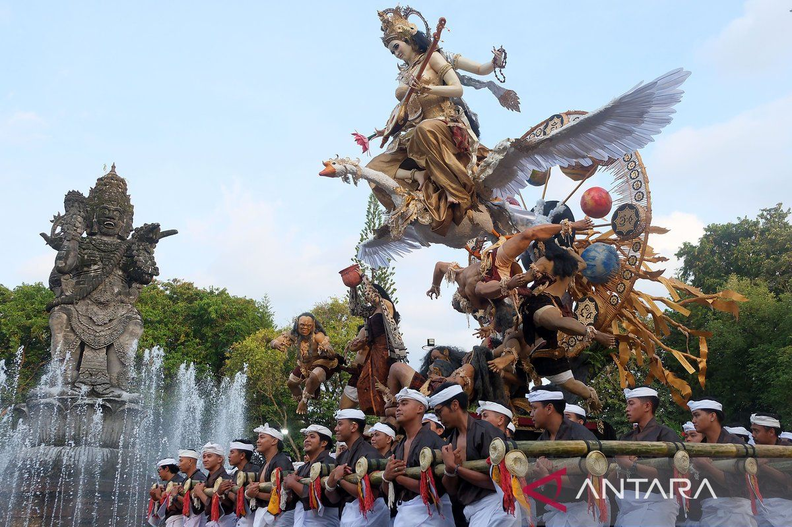
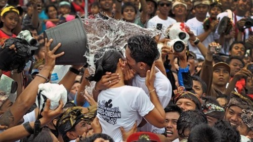

Galeri Seni & Tradisi
Calonarang sering dipentaskan dalam setiap acara ritus yajna atau pemujaan di Bali. Pementasan dramatari ini menjadi pelengkap upcara sehingga acara pemujaan dapat berjalan dengan baik Pementasan Calonarang dalam upacara pemujaan di Bali merupakan salah satu media penyucian. Umumnya, masyarakat Bali beranggapan bahwa Calonarang adalah mitologi yang identik dengan ilmu hitam.

Ogoh-ogoh adalah karya seni patung dalam kebudayaan Bali yang menggambarkan kepribadian Bhuta Kala, simbol energi negatif atau kejahatan, yang diarak saat malam Pengerupukan (sehari sebelum Nyepi). Patung raksasa ini dibuat oleh pemuda desa (sekaa teruna) menggunakan bahan alami atau ramah lingkungan, kemudian dibakar sebagai simbol pemurnian diri dan lingkungan. Ogoh-ogoh melambangkan kekuatan Bhuta Kala (alam semesta dan waktu yang tak terukur). Tradisi ini memvisualisasikan sifat negatif manusia dan bertujuan mengusir energi buruk dari kehidupan masyarakat.

Omed-omedan adalah tradisi unik tarik-menarik dan berpelukan antar muda-mudi (usia 17-30 tahun lajang) di Banjar Kaja, Sesetan, Denpasar, Bali. Digelar setahun sekali saat Ngembak Geni (sehari setelah Nyepi), ritual ini bertujuan mempererat persaudaraan, menjaga harmoni, dan dipercaya sebagai ajang cari jodoh warisan leluhur. Berasal dari bahasa Bali "omed" yang berarti tarik, tradisi ini melambangkan kebersamaan, solidaritas (masima krama), dan kegembiraan. Diawali sembahyang di Pura, kemudian peserta pria dan wanita dipisahkan. Peserta yang dipilih akan diarak ke depan, saling berpelukan, tarik-menarik, berciuman dan seringkali disiram air oleh panitia hingga basah kuyup.
